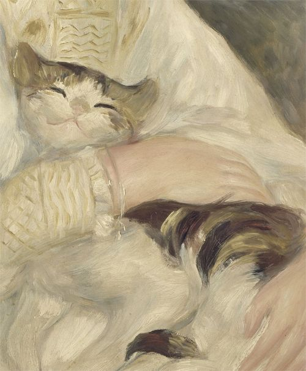
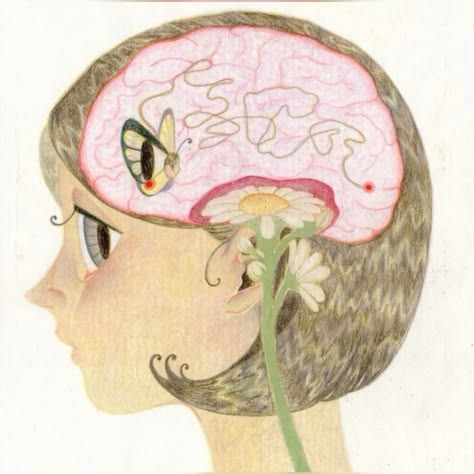
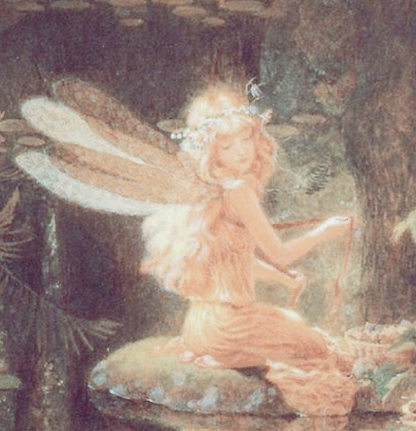
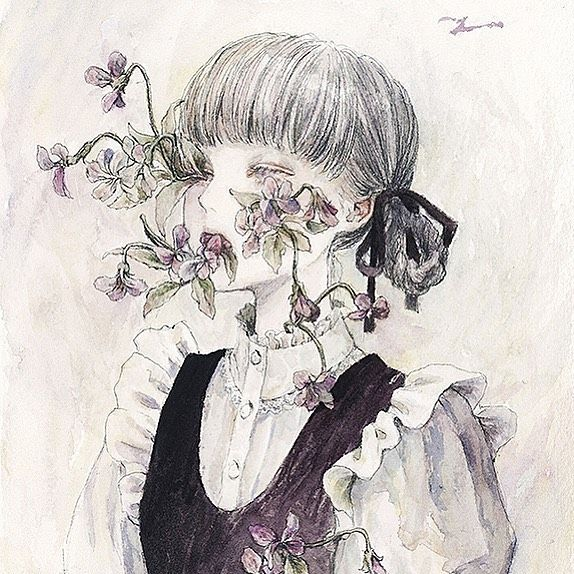
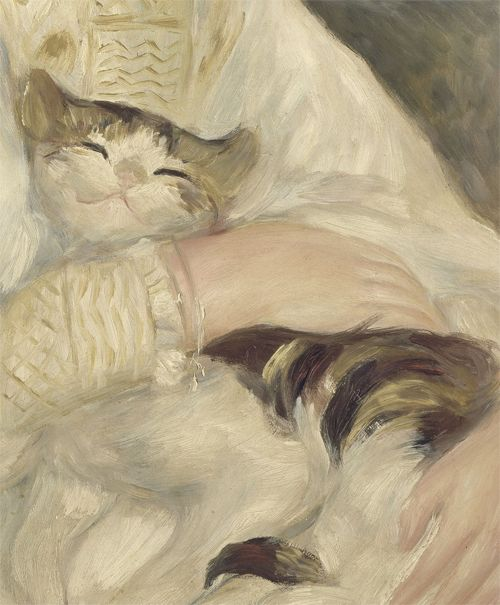
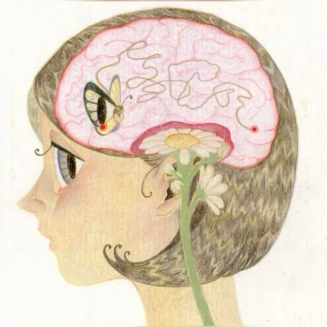
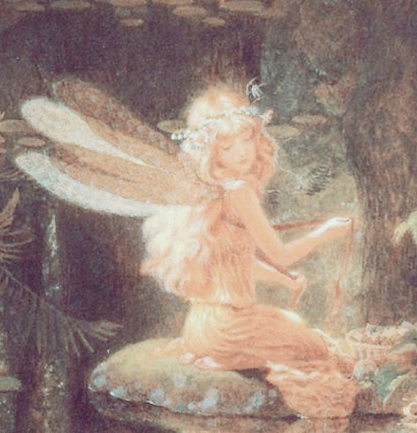
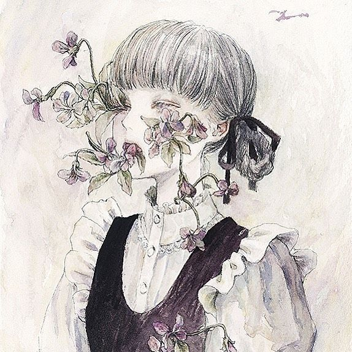
To attempt to capture your essence is like trying to bottle the smell you catch on a random Tuesday that makes you feel as you did at age seven at home in your body cloistered in a warm memory, and then mass produce it and feel the same sense of safety as you did in that first moment. The smell that makes you feel grounded and right, the kind you can't quite identify but know deep in your bones defines the most ephemeral glowing childhood memory bathed in a heavy bloom and covered in a fine layer of dust. Nonetheless, I adhere to the demand to try.
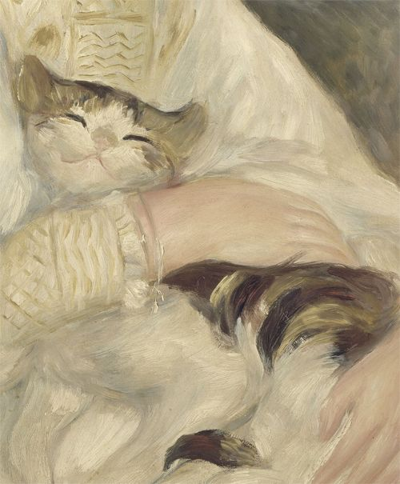
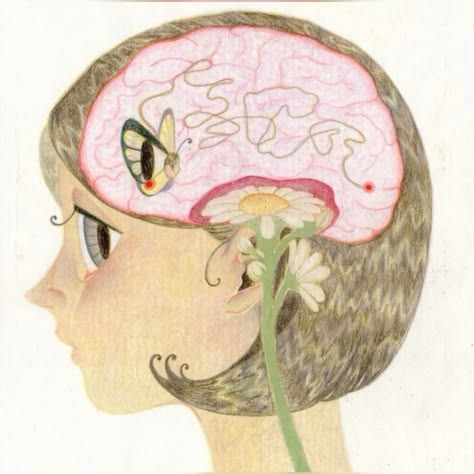
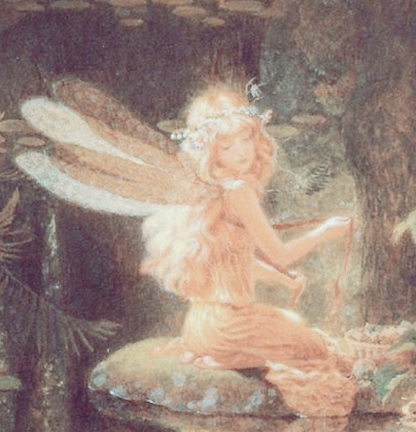
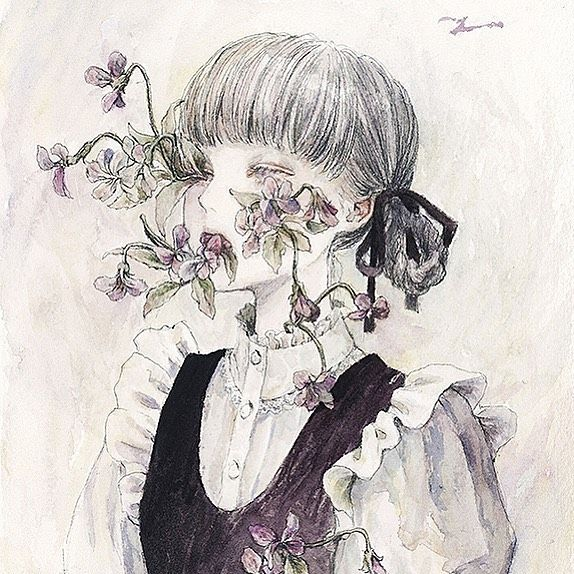
I hope you like my crow gift :).